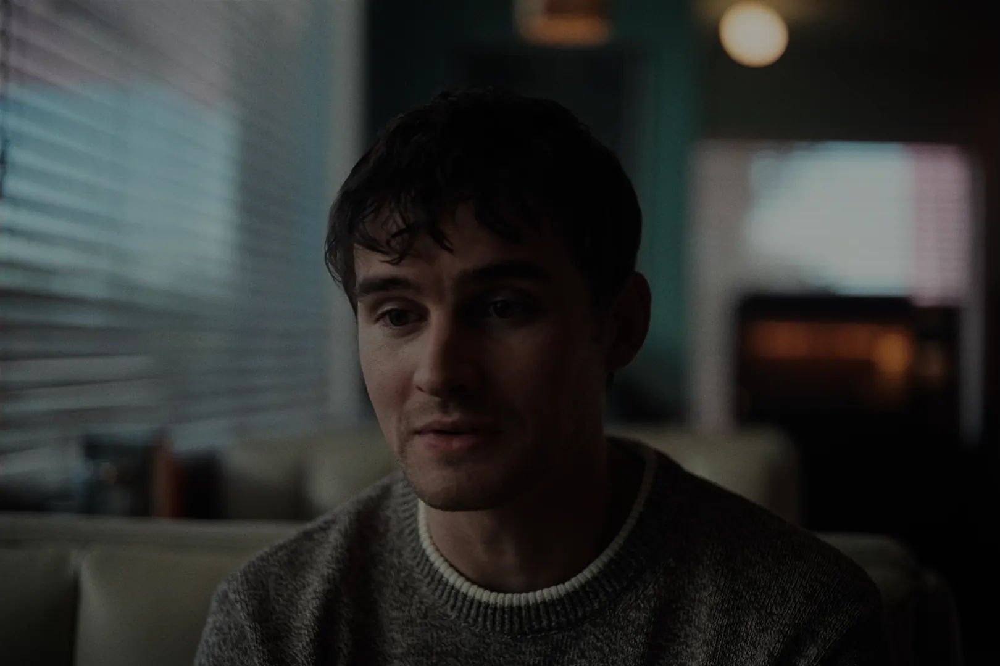
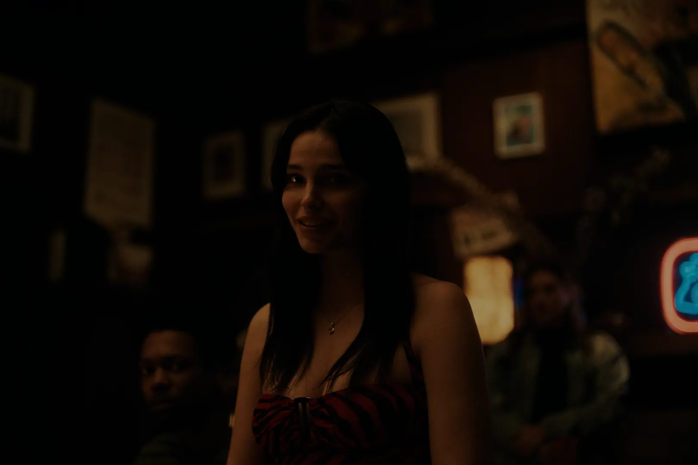
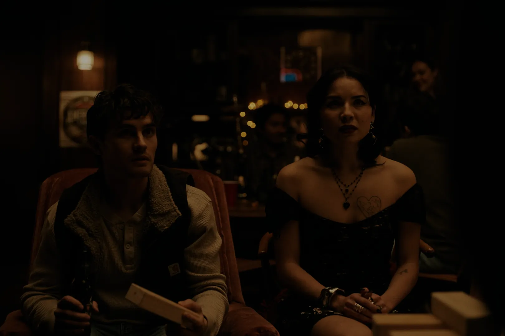

Para melhor experiência, habilite o áudio desta página
Elenco de Obsession
O elenco de Obsession reúne atores que dão
vida aos personagens envolvidos nessa história de terror,
suspense e obsessão. A produção é liderada por
Michael Johnston e
Inde Navarrette, acompanhados por
Cooper Tomlinson,
Megan Lawless e
Andy Richter.
Personagens principais
Michael Johnston — Bear

Michael Johnston, o protagonista de Obsession
Michael Johnston interpreta Bear,
o protagonista da história. Bear trabalha em uma loja
de música e possui sentimentos por sua amiga de
infância, Nikki. Ao tentar fazer com que ela
corresponda aos seus sentimentos, ele acaba tomando
uma decisão que muda completamente o rumo da história.
Johnston é conhecido por trabalhos como
Teen Wolf e também por trabalhos de dublagem,
incluindo personagens em produções e jogos relacionados
ao universo de X-Men e da Marvel.
Inde Navarrette — Nikki Freeman

Inde Navarrette, a protagonista de Obsession
Nikki Freeman é interpretada por
Inde Navarrette. Ela é amiga de infância e colega de
trabalho de Bear, sendo uma das personagens centrais
da história.
Nikki acaba sendo diretamente afetada pela decisão de
Bear e passa por uma transformação importante ao longo
da trama.
Inde Navarrette também é conhecida por interpretar
Sarah Cortez em Superman & Lois e Estela
de la Cruz em 13 Reasons Why.
Cooper Tomlinson — Ian
Cooper Tomlinson, o amigo de Bear e Nikki
Ian, interpretado por Cooper Tomlinson,
é amigo de Bear e Nikki. Ele acaba ficando envolvido
nas consequências das escolhas de Bear e acompanha de
perto os acontecimentos que começam a sair do controle.
Cooper Tomlinson também possui uma relação profissional
próxima com Curry Barker. Os dois trabalharam juntos
em projetos anteriores e também participaram da produção
de Milk & Serial.
Megan Lawless — Sarah

Megan Lawless, a amiga de Bear e Nikki
Sarah, interpretada por Megan Lawless,
faz parte do grupo de personagens próximos de Bear e
Nikki. Sua presença ajuda a ampliar o círculo de
personagens envolvidos nos acontecimentos da história.
O elenco e a história
A interação entre esses personagens é importante para o
desenvolvimento de Obsession. Bear e
Nikki estão no centro da história, enquanto Ian, Sarah e
Carter fazem parte do ambiente que acaba sendo afetado
pelas consequências das escolhas do protagonista.
A combinação entre diferentes personagens ajuda a criar
situações de suspense, humor e terror, tornando o elenco
uma parte importante da experiência do filme.
Continue navegando
Agora que você conheceu melhor o elenco de
Obsession, escolha uma das páginas abaixo
para continuar explorando o site: